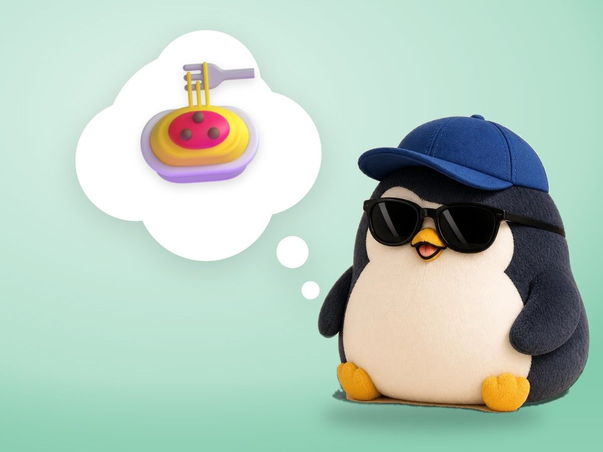

📝 DRAFT · 下書き — まだ本番に出していません · 下書き一覧
🐧 EVERYDAY LIFE⚡ 22 SEC
You cannot change the world tonight, but you can cook pasta 🍝

World News
In world news, your power is almost 0%.
Heart Gets Tired
If you stay there too long, your heart gets tired.
⚡ TRY IT
Where is your foot?
📺⚠️🌪️📉
🍲💧🍝🍅🍽️
🎯 My influence0%
🔋 My energy60%
You are in the news. Tap "My kitchen" too.
😶 It feels like doing something… but still 0%.
Here, you can really change something.
🍳 Cooking… it is really changing!
🍽️ Dinner is ready! Influence 100%.
One Foot Back
So, put one foot back in your daily life, where you can do something.
Tonight's Pasta
You cannot change the world, but you can make pasta tonight.
Dog Example
Burkeman's example is "a neighbor who does not pick up the dog poop," but he writes, "I have not changed them yet."
📚 I learned this from Oliver Burkeman's newsletter. Read the original (English)